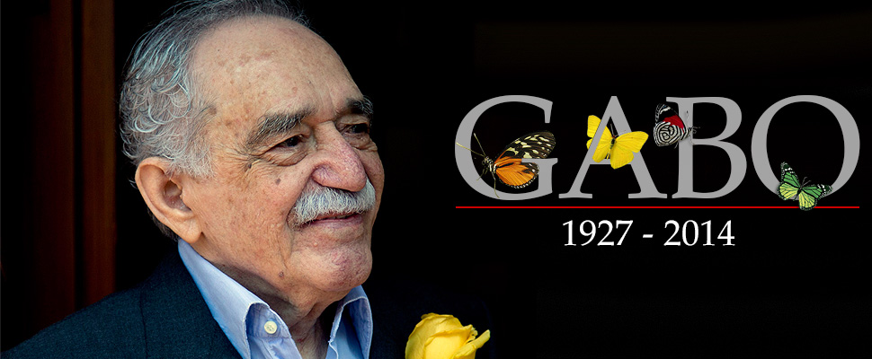

Lo único que me duele de morir, es que no sea de amor. "Gabriel García Márquez"
Gabriel García Márquez

Escritor, Güionista, Editor y Periodista Colombiano
Cronología de la vida de Gabo
- 1927: El 6 de marzo nace Gabriel García Márquez en Aracataca (Magdalena, Colombia).
- 1947: Inicia la carrera de derecho en Bogotá. Publica su primer cuento.
- 1948: El "Bogotazo" provoca el cierre de la universidad; García Márquez pide traslado a la Universidad de Cartagena, pero igualmente no terminará los estudios. Inicia su actividad periodística.
- 1950: Ingresa en el periódico El Heraldo de Barranquilla y participa activamente en las tertulias literarias del llamado Grupo de Barranquilla. Viaja con su madre a Aracataca con el fin de vender la casa natal, y siente que su verdadero interés es escribir sobre ese mundo de su infancia.
- 1954: Ingresa en la redacción del periódico El espectador.
- 1955: Publica su primera novela, La hojarasca, que había comenzado a escribir en 1950. La publicación del Relato de un náufrago por entregas en El espectador es censurada por el régimen de Rojas Pinilla y García Márquez parte al exilio.
- 1958: En la revista Mito publica El coronel no tiene quien le escriba, libro que terminó en enero de 1957 en París. Se casa en Barranquilla con Mercedes Barcha.
- 1962: Publica la novela La mala hora y recopilación de cuentos Los funerales de la Mamá Grande.
- 1966: Inicia la redacción de Cien años de Soledad.
- 1967: Publica en Buenos Aires la novela Cien años de Soledad.
- 1970: Publica en forma de libro Relato de un náufrago.
- 1973: Publica la recopilación de cuentos La increíble y triste historia de la Cándida Eréndira y de su abuela desalmada.
- 1975: Publica El otoño del patriarca, novela que escribió durante ocho años y para la cual leyó durante diez años sobre la historia de América Latina y sus dictadores.
- 1981: Publica Crónica de una muerte anunciada, novela inspirada en un suceso real acaecido durante su juventud.
- 1982: La Academia Sueca le concede el Premio Nobel de Literatura. Aparecen los volúmenes Textos costeños y Entre cachacos, recopilaciones periodísticas.
- 1985: Publica El amor en los tiempos del cólera, con una edición inicial de 750.000 ejemplares.
- 1986: Publica La aventura de Miguel Littín clandestino en Chile.
- 1989: Publica la novela histórica El general en su laberinto, sobre la figura del libertador Simón Bolívar.
- 1992: Publica Doce cuentos peregrinos, recopilación de relatos breves.
- 1994: Publica el monólogo teatral Diatriba de amor contra un hombre sentado.
- 1996: Publica Noticia de un secuestro.
- 2002: Publica Vivir para contarla, primera parte de sus memorias.
- 2004: Publica la novela breve Memorias de mis putas tristes.
- 2014: Fallece el 17 de abril en Ciudad de México.